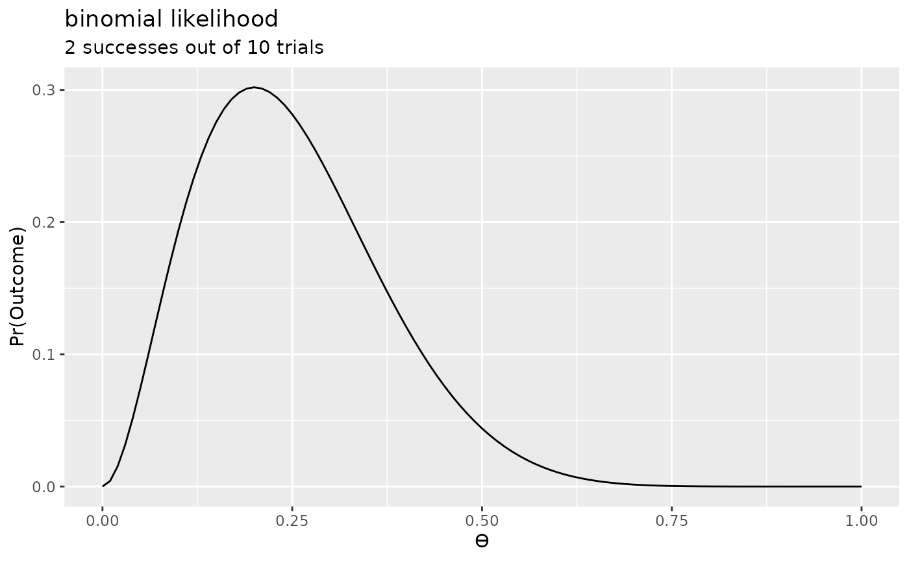
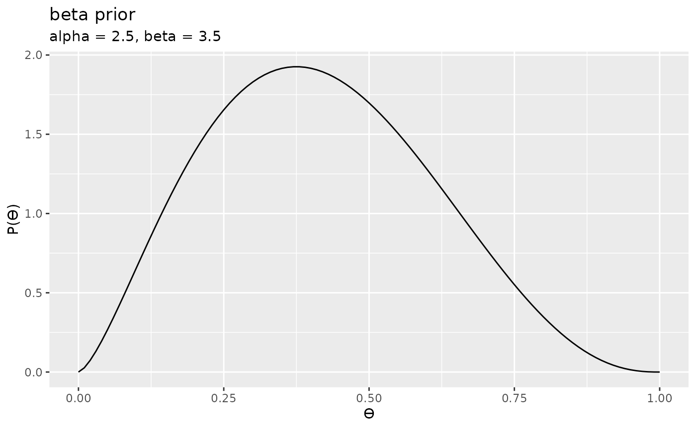
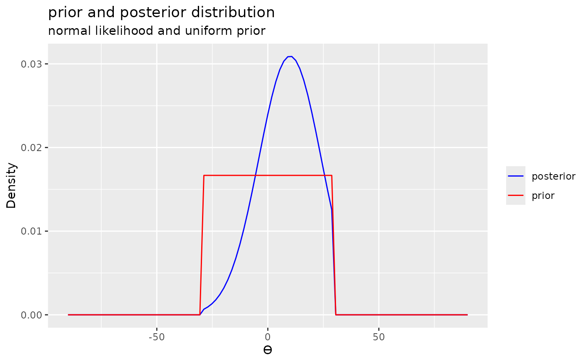
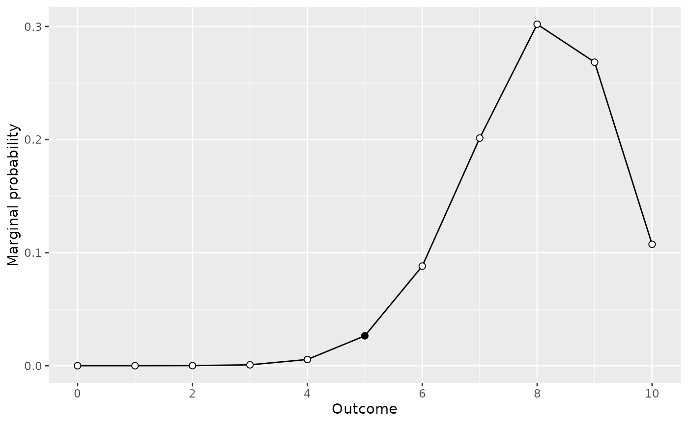

This vignette demonstrates some of the advanced features of the
bayesplay package.
The advanced features include:
Computing Bayes factors using the Savage-Dickey density ratio
Visually comparing marginal predictions for different priors
Calculating posterior distributions
Bayes theorem defines a posterior distribution according to the follows:
\[P(\theta|X) = \frac{P(X|\theta)\cdot{}P(\theta)}{P(X)},\]
where \(P(X|\theta)\) is the likelihood (the conditional probability of the data given the parameter value) and \(P(\theta)\) and \(P(X)\) are the (unconditional) prior probability of the parameter and marginal likelihood, respectively.
Often in presentations of Bayes theorem, the marginal likelihood, \(P(X)\), is omitted and Bayes theorem is given as follows:
\[P(\theta|X) \propto P(X|\theta)\cdot{}P(\theta).\]
One reason for this may be that the concept of the marginal likelihood is a tricky concept to grasp. However, the law of total probability give the marginal likelihood as follows:
\[P(X)= \int{}P(X|\theta)\cdot{}P(\theta)d\theta,\]
where \(P(X|\theta)\), and \(P(X)\) are again the likelihood and the prior, respectively. This should be familiar from the computation of the Bayes factor. Simply put, the marginal likelihood is the weighted average of the likelihood function where the prior provides the weights.
Given this, all that is needed to compute a posterior is a prior and a likelihood. Let us walk through a few examples using a few different likelihoods and priors.
Binomial likelihood and beta prior
First, we’ll use a binomial likelihood with a beta prior. First, we’ll define the likelihood and the prior, and then we’ll multiply the two together, as given by the proportional form of Bayes theorem.
# first the likelihood
l <- likelihood(family = "binomial", successes = 2, trials = 10)
l
#> Likelihood
#> Family
#> binomial
#> Parameters
#> successes: 2
#> trials: 10
#>
# then the prior
p <- prior(family = "beta", alpha = 2.5, beta = 3.5)
p
#> Prior
#> Family
#> beta
#> Parameters
#> alpha: 2.5
#> beta: 3.5
#> Once both the prior and the likelihood have been defined then we can simply multiply the two together.
prod <- l * p
prod
#> Product
#> Likelihood family: binomial
#> Prior family: beta
#> Area under curve: 0.1294Let us draw a few plots of the objects that we’ve just created.


Finally, we can plot the product of these two plots. That is, the we simply multiply together the two \(y\) values (from the plots above) for each value of \(x\). This give the following:
plot(prod) + labs(title = "product of the likelihood and prior", subtitle = "for a binomial likelihood and beta prior")The product of the prior and the likelihood is proportional to the posterior distribution, but it is not the posterior distribution. In fact, it is not a proper probability distribution, because the area under the curve is not equal to 1. However, we could normalise it, by dividing the above plot by normalising constant equal to the area under the curve. That is, we could normalise it by dividing it by the marginal likelihood.
We can compute the marginal likelihood by simply computing the integral of the product, as follows:
integral(prod)
#> 0.1293755And we can perform this normalisation in the bayesplay
package by using the extract_posterior() function.
posterior1 <- extract_posterior(prod)
posterior1
#> Posterior
#> Likelihood
#> binomial
#> successes: 2
#> trials: 10
#> Prior
#> beta
#> alpha: 2.5
#> beta: 3.5
#>
#> Normalising constant: 0.1294Now we can plot the posterior distribution:
Normal likelihood and uniform prior
We can now repeat the process using a different likelihood and prior. We can compute the posterior and plot it in just two steps.
posterior2 <- extract_posterior(likelihood("normal", 10, 14) * prior("uniform", -30, 30))
plot(posterior2) + labs(title = "posterior distribution", subtitle = "normal likelihood and uniform prior")Noncentral ‘d’ likelihood and Cauchy prior
And finally, we can repeat the process using a noncentral ‘d’ (noncentral t distribution scaled in terms of effect size) and a Cauchy prior.
posterior3 <- extract_posterior(likelihood("noncentral_d", .8, 25) * prior("cauchy", 0, .707))
plot(posterior3) + labs(title = "posterior distribution", subtitle = "noncentral 'd' likelihood and cauchy prior")Plotting priors and posteriors
The prior and posterior can be thought of representing beliefs about the parameter values before and after seeing the data. For this reason, it can often be desirable to plot priors and posteriors together to observe how beliefs have been reallocated or updated as a result of observing the data.
When plotting a posterior, the plot() function can take
a second argument to indicate that the prior should be included in the
plot.
plot(posterior1, add_prior = TRUE) + labs(title = "prior and posterior distribution", subtitle = "for a binomial likelihood and beta prior")
plot(posterior2, add_prior = TRUE) + labs(title = "prior and posterior distribution", subtitle = "normal likelihood and uniform prior")
The Savage-Dickey density ratio
Once we have a posterior distribution at hand then it is possible to calculate a Bayes factor using the Savage-Dickey density ratio. This Bayes factor is equal to the Bayes factor that is calculated by comparing the full model to a restricted model that is nested in the full model. For example, consider the following Bayes factor:
data_model <- likelihood("binomial", successes = 2, trials = 10)
prior_alt <- prior("beta", 2.5, 3.5)
prior_null <- prior("point", 0.5)
bf <- integral(data_model * prior_alt) / integral(data_model * prior_null)
summary(bf)
#> Bayes factor
#> Using the levels from Wagenmakers et al (2017)
#> A BF of 2.944 indicates:
#> Anecdotal evidenceThis Bayes factor uses the same likelihood that we used to compute
posterior1, and the alternative prior is the same prior we
used to compute posterior1. The null prior in this case is
a nested inside the alternative prior. That is, it is a
restriction of the alternative prior.
As an alternative, we could compute this Bayes factor using the
Savage-Dickey density ratio by comparing the density of the prior at
\(\theta\) = 0.5 to the density of the
posterior at same value. We can do this with the bayesplay
package by using the sd_ratio() function and specifying
point = 0.5.
bf1 <- sd_ratio(posterior1, point = 0.5)
summary(bf1)
#> Bayes factor
#> Using the levels from Wagenmakers et al (2017)
#> A BF of 2.944 indicates:
#> Anecdotal evidenceAs can be seen, the two Bayes factors are identical.
identical(bf, bf1)
#> [1] FALSEWe can repeat this for the other posterior distributions.
Marginal predictions
We can think of priors are models of our hypotheses. That is, they represent our pre-data beliefs about the parameter values, or what our hypotheses predict about the parameter values. When we run experiments, however, we don’t collect data on the parameter values directly. Instead, we collect observations.
Consider the following example: We are conducting a coin-flipping and we’re collecting observations in terms of the number of heads in our series of 10 flips. We might have two hypotheses, one where we hypothesize that the coin bias is exactly 0.2 and another where we hypothesize that the coin bias is exactly 0.8. We might this that these two hypotheses predict that we should obtain 2/10 heads and 8/10 heads, respectively. However, these two outcomes are only the most likely observations under the two hypotheses. That is, other outcomes are possible, although they’d be less likely that these two particular outcomes. But what exactly is the distribution of expected data for each of these two hypotheses?
To work this out, we’ll first need to define a likelihood. Because
this is coin flipping experiment we’ll use a binomial
likelihood, and since our experiment is going to consist of 10 flips,
we’ll set the trials parameter to 10. For the
successes parameter, we simply set it to an arbitrary
value—for example, 5. This value will be highlighted in the subsequent
plots, so it can also be useful to examining observations relative to
some reference observation.
data_model <- likelihood("binomial", successes = 5, trials = 10)We then specify two priors that represent our two hypotheses.
By plotting the two priors we can see that each prior assigns all the probability weight to a single bias value.
# prior for model 1
plot(hypothesis1)
# prior for model 2
plot(hypothesis2)We, however, what to know the observations that each model predictions. To work this out, we first multiply our data model (that is, our likelihood were the observation has been left out) by each of the priors.
model1 <- data_model * hypothesis1
model2 <- data_model * hypothesis2We then use the extract_predictions() function to
extract the marginal predictions for the resulting product of the
likelihood and the prior. We can then plot these predictions using the
plot() function.
# predictions of model 1
model1_predictions <- extract_predictions(model1)
plot(model1_predictions)
# predictions of model 2
model2_predictions <- extract_predictions(model2)
plot(model2_predictions)
What we see in each of these plots is marginal probability of each observation for our given data model and prior. That is, we see the predictions in terms of observations for each model.
Visually comparing models
Although looking at each set of model predictions can be useful to see what sort of observations we should expect viewing each model on it’s on is of limited value. Instead, what we can do is compare the two model are see how the predicted observations for each model differs.
To this, we can use the visual_compare() function.
visual_compare(model1, model2)Since these plots show the marginal probability of different
observation over prior, the values in the plots are related to the Bayes
factor. In fact, the ratio of the two plots at a particular
observation is the Bayes factor for that observation. The
visual_compare() function contains an extra parameter,
ratio, which can be set to TRUE to directly
display the ratio. The resulting plot show the Log10 Bayes factor for
each observation. The ratio plot also shows a horizontal line for the
equivalence point. Intersections between the ratio plot and equivalence
line correspond to observations at which neither model is favoured—that
is, the marginal likelihoods are the same and the ratio of the marginal
likelihoods is 1.
visual_compare(model1, model2, ratio = TRUE)We’re not restricted to examining binomial likelihoods. We
can examine any of the likelihoods and priors available in the
bayesplay package. For example, we can examine the
predictions for a noncentral ‘d’ likelihood and cauchy
and point priors. To do this, we set the value of our
observation, d to an arbitrary value—for example, 0, and
set n to the planned sample size our our experiment.
data_model2 <- likelihood("noncentral_d", d = 0, n = 20)Now we can specify a point prior, and a Cauchy prior and multiply them by the likelihood.
d_model1 <- extract_predictions(data_model2 * prior("cauchy", 0, .707))
d_model2 <- extract_predictions(data_model2 * prior("point", 0))
plot(d_model1)
plot(d_model2)
visual_compare(d_model1, d_model2)
visual_compare(d_model1, d_model2, ratio = TRUE)